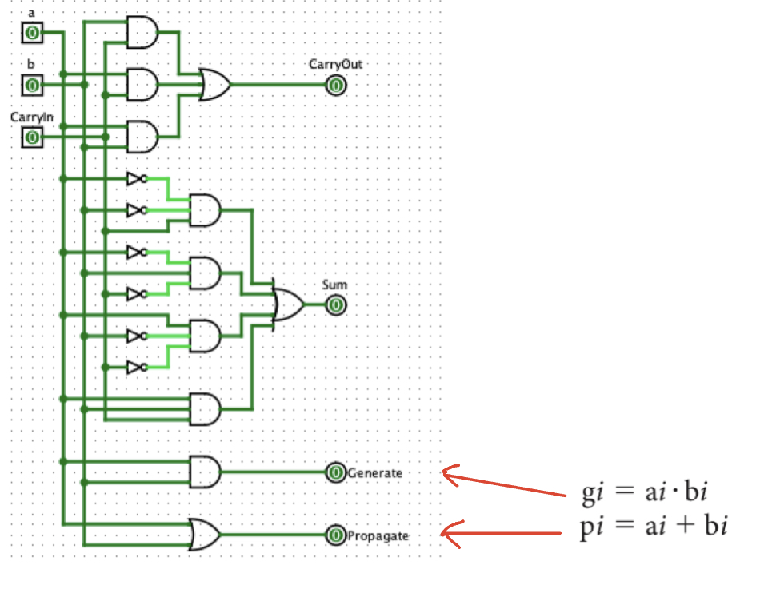
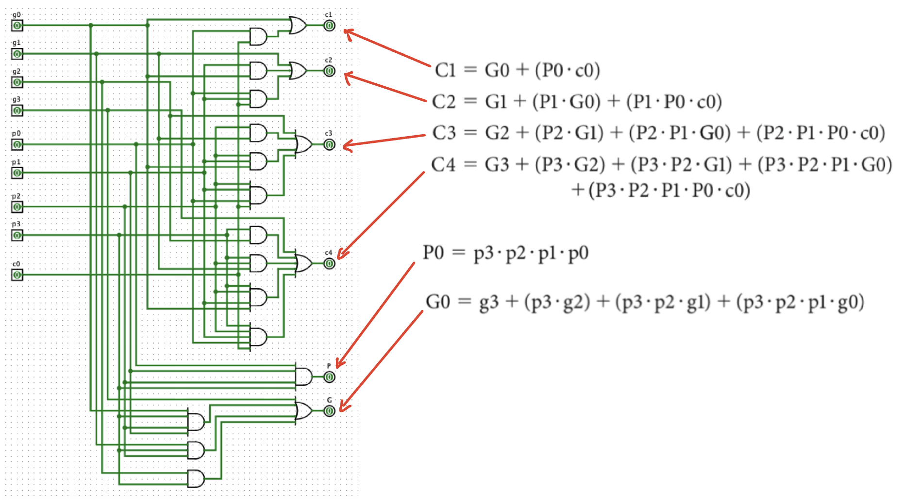
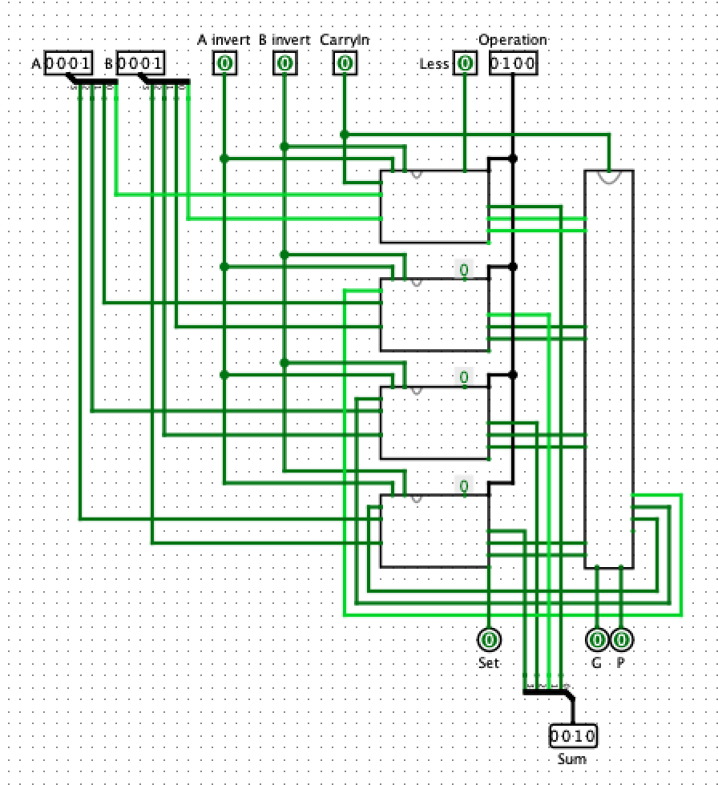
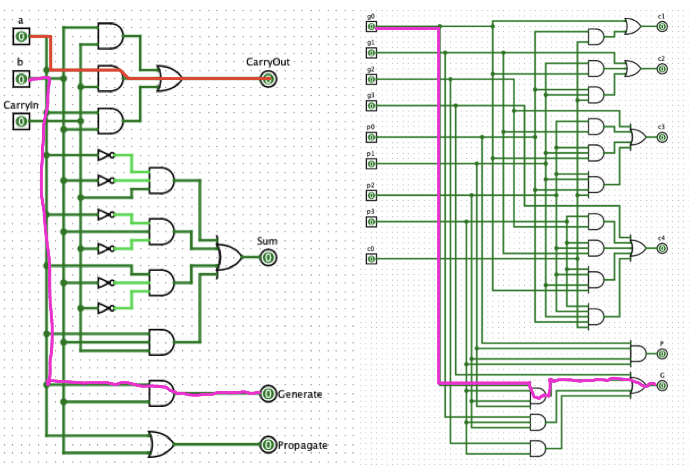
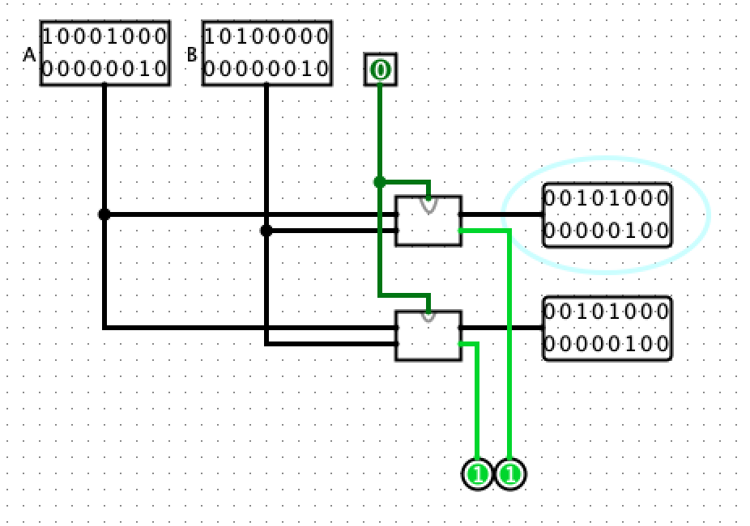

Titel: Adders
Dit verslag werd opgesteld door:
De oplossing bestaat uit de volgende bestanden (geef alle bestanden op):
In the circuit below you will find the 1-bit adder that we have constructed (including carry in and carry out).

The goal of this 1-bit adder is calculating the sum and Carry Out of inputs A and B whilst keeping the Carry In in mind.
Calculating the sum is quite straight forward; the Sum will be 1 whenever there is no Carry In and either A XOR B is 1.
The Sum will also be 1 whenever there is a Carry In and neither A NOR B or A AND B.
The calculation of the Carry Out is fairly simple aswell; Carry Out will be 1 whenever there is an input A AND B (and no Carry In) or a Carry In and either A XOR B.
In the table below you will find the truth table for the 1 bit adder.

(2b) The 16 bit adder with two 16 bit inputs in illustrated below.

(2c) What is the number of gates you used to build your 16-bit ripple carry adder?
81.
One adder consists of five gates, so 16 gates will equal 80 gates. We will also use a XOR gate for overflow detection (80 + 1)
(2d) What is the latency (number of AND/OR ports traversed) when calculating the sum using a 16-bit ripple carry adder?

The longest path a circuit can take through our 1 bit adder will count 3 total gates traversed.
We know when calculating the Sum we have to traverse through 16 total one-bit adders, so the total latency will amount to 48 total AND/OR gates.
(2e) Think about a way how overflow can be determined from carry outs.
Overflow can happen in two scenarios: either we're adding 2 positive numbers and are ending up with a negative number, or we're adding 2 negative numbers and are ending up with a positive number.
Using two's compliment we can easily determine whether an input / output is positive or negative by looking at the left most bit. If the bit is 1: it's a negative number. If the bit is 0: it's a positive number.
Given this information we can check whether there is overflow by simply looking at the inputs and output. If we're adding two positive numbers together and have a negative output, there is overflow and vice versa.
In the table below we have marked both cases in red. Since it's the only cases where the Carry In and Carry Out are not equal, we can make use of a XOR gate to check for overflow.


Build a circuit of a 16-bit two’s complement carry lookahead adder using four 4-bit adder blocks.
We will refer to project3.circ as it contains a cleaner version of the carry logic.
(a) Build a circuit for a 4-bit adder block. This block has input carryIn, a0, a1, a2, a3, b0, b1, b2, b3 and outputs s0, s1, s2, s3, P0, G0. Note that there is no output for carryOut, as a carry lookahead adder doesn’t use ci−1.
First we extend our 1-bit adder by adding a Propagate and Generate output, denoting whether a 1-bit adder is passing a carry along from the previous input, is generating a carry itself, is doing both, or doing neither.
In the following image you can see the carry logic, this unit is able to deal with the 4 propagates and 4 generates from lower levels and transform them into a super propagate and a super carry that can then be used at a higher level of abstraction. The carry logic was designed in such a manner that it is easily composable and it allows the user to quickly go from 4-bit to 64-bit if that was required.
Here you can see the 4-bit adder. (with extra logic functionality which we will ignore for now) It calculates the carry_in for each of the 1-bit full adders (square boxes on the left) in parallel by using the carry logic unit (slim rectangle on the right)
(b) Build a circuit of a 16-bit two’s complement carry lookahead adder by creating a “carry lookahead unit” that uses four of your own 4-bit adder blocks.
Thanks to the composablity of the carry logic, we simply make it so that the 4-bit carry lookahead adders have the same shape as the 1-bit full adders, connect the wires in the same fashion, and we get the 16 bit version!

(c) What is the number of gates you used to build your 16-bit carry lookahead adder?
There are 17 gates in our 1-bit full adder and 19 gates in the carry logic.
So the number of gates in a single 4-bit carrylookahead adder is 4*17 + 19 = 87
The number of gates in the 16-bit adder then is 4*87 + 19 = 367
(d) What is the latency (number of AND/OR ports traversed) when calculating the sum using a 16-bit carry lookahead adder?
The number of gates traversed for ripple carry is denoted by the red path in the image below. Since this path needs to be traversed 16 times the number of gate delays is 16*2 = 32.
Compare this to the number of gate delays of the carrylookahead adder, denoted by the pink path. 1 gate needs to be traversed in order to deliver the initial propagate and generate values, and subsequently it needs to pass through the carry logic in two layers before finally arriving at the sum so 1 + (2*2) + 2 = 7 gate delays
(e) On this 16-bit adder circuit, create an extra output bit, denoting overflow
Overflow can be seen in the previous pictures. It works in the same fashion as the ripple carry adder by comparing the last 2 carry outputs with an XOR gate.
Verify that your 16-bit two’s complement carry lookahead adder is correct. Do this by connecting two 16-bit inputs to both the carry lookahead 16-bit adder and the ripple carry 16-bit adders, and comparing the outputs. Compare the carry lookahead 16-bit adder and the ripple carry 16-bit adders by counting the latency of both adders.
In the image below you can see the 16-bit adders hooked up to the same inputs. As expected they give the same output.
Finally, as was mentioned in the previous question, the gate delay for the ripple carry adder is 32 whilst for the carrylookahead adder it is only 5.